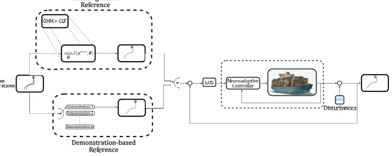
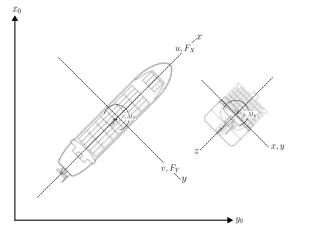
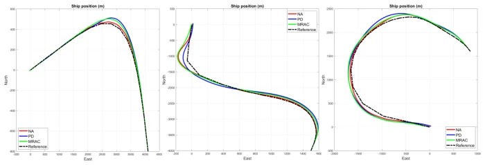
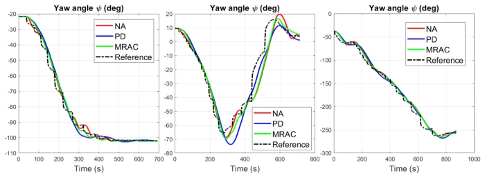
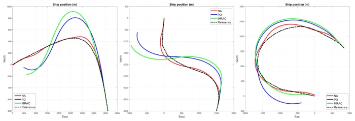
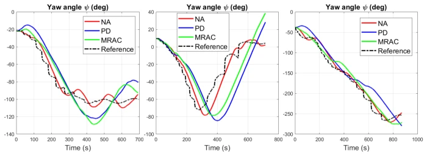

This paper equips unmanned surface vehicles (USVs) with a dual insurance of "human instinct" and "neuro-adaptability", attempting to solve the embarrassment of traditional imitation learning "going off course" in wind and waves. The highlight lies in that it does not blindly pursue global convergence, but introduces the concept of "behavior tracking", enabling the vessel to quickly correct its trajectory like an experienced driver after disturbance, rather than drifting to the ends of the earth first and then slowly finding the target. However, a critique: this is essentially a "paper tiger" run in a simulator (MSS), although the data is beautiful, it has not been tested on a real ship, those complex ocean nonlinear disturbances might just be "gentle sea breezes" in the simulator. Furthermore, the parameter tuning of the neuro-adaptive controller (such as number of neurons, leakage terms) seems to be a black box, the generalization ability during actual deployment is questionable. Don't be fooled by the gimmick of "dynamic human response", this is more of a Frankenstein's monster of control theory, but in specific scenarios it is indeed better than pure PD or MRAC.
研究动机Motivation
现有基于动力学系统（DS）的模仿学习（IL）在无人船（USV）应用中存在致命短板：为了追求全局收敛到目标点，往往牺牲了局部轨迹的复现保真度。当遭遇持续的海况扰动（如波浪、洋流）时，标准DS-IL方法会让船舶大幅偏离演示轨迹，直到最后才勉强收敛，这在狭窄航道或高精度作业中是灾难性的。虽然Becerra-Mora和Acosta（2024）及Becerra-Mora等（2025）提出了结合控制李雅普诺夫函数（CLF）的优化框架，保证了理论稳定性，但在硬件执行层面，一旦扰动过大，轨迹复现精度仍显著下降。此外，传统控制策略如MRAC（Arabi et al., 2019）或PD控制缺乏对复杂非线性轨迹的隐式学习能力，无法像人类专家那样具备自适应的柔顺性。因此，亟需一种既能保持DS-IL的轨迹泛化能力，又能通过强鲁棒控制机制在扰动下快速恢复轨迹精度的混合架构。
Existing imitation learning (IL) based on dynamical systems (DS) has fatal shortcomings in unmanned surface vehicle (USV) applications: to pursue global convergence to the target point, often sacrificing the fidelity of local trajectory reproduction. When encountering persistent sea state disturbances (such as waves, currents), standard DS-IL methods cause the vessel to deviate significantly from the demonstration trajectory, converging only reluctantly at the end, which is catastrophic in narrow channels or high-precision operations. Although Becerra-Mora and Acosta (2024) and Becerra-Mora et al. (2025) proposed an optimization framework combining control Lyapunov functions (CLF), guaranteeing theoretical stability, but at the hardware execution level, once disturbances are too large, trajectory reproduction accuracy still decreases significantly. Furthermore, traditional control strategies such as MRAC (Arabi et al., 2019) or PD control lack implicit learning capabilities for complex nonlinear trajectories, unable to possess adaptive compliance like human experts. Therefore, there is an urgent need for a hybrid architecture that can maintain the trajectory generalization capability of DS-IL while quickly restoring trajectory accuracy under disturbances through strong robust control mechanisms.

Figure 1: IL architectures comparison: top-left, learning references for human-like responsive- ness; bottom-left, demonstration references for classical trajectory tracking control.
This paper proposes a "Learning-Control" hybrid architecture, the core is to use DS-based IL as a reference generator, and Neuroadaptive Control as an execution corrector. The overall process is divided into offline learning and online control two stages. Offline stage: Use Gaussian Mixture Model (GMM) to learn nonlinear dynamics from human expert demonstration data, simultaneously learn CLF parameters jointly through constrained optimization problems, generating dynamic reference trajectories with global stability (Equation 5-7). This reference trajectory does not depend on fixed paths, but is based on state-dependent DS, capable of converging to the target from any starting point. Online stage: Introduce a framework based on Model Reference Neuroadaptive Control (MRAC) (Arabi et al., 2019). The system constructs a reference model, whose input is the dynamic reference trajectory generated by DS. The controller consists of two parts: Nominal Control responsible for basic tracking, Adaptive Control uses Radial Basis Function (RBF) neural network to approximate system uncertainties in real-time (including model errors and environmental disturbances). Through Lyapunov stability analysis (Equation 15-16), design parameter update laws (Equation 14) to ensure errors and weight estimation errors are uniformly ultimately bounded. This design enables the neuro-adaptive term to actively generate control torque after the vessel is disturbed, pulling the state back near the demonstration trajectory, achieving "behavior tracking".

Figure 2: Coordinate system for the container ship.
Figure 4: Comparison of references. Demonstration-based reference (a) and learning-based reference (b).
实验Experiments
实验在Marine Systems Simulator (MSS)工具箱中进行，使用集装箱船模型（Son and Nomoto, 1981）。数据集包含三组复杂轨迹，每组3个演示，共5000个数据点。基线对比了神经自适应控制（NA）、模型参考自适应控制（MRAC）和比例微分控制（PD）。评测指标为扫掠误差面积（Swept Error Area, SAE）和轨迹跟踪误差（海里）。结果显示：在无扰动理想条件下，NA控制误差最小（如轨迹A误差0.0111海里，优于MRAC的0.0289）；在加入高斯噪声模拟海况扰动后，NA优势更明显，误差显著低于MRAC和PD（如轨迹B误差0.0530 vs MRAC的0.4268）。消融实验表明，引入神经自适应机制后，船舶在强扰动下仍能紧密跟随学习到的动态参考，验证了“行为追踪”的有效性。
Experiments were conducted in the Marine Systems Simulator (MSS) toolbox, using a container ship model (Son and Nomoto, 1981). The dataset contains three sets of complex trajectories, 3 demonstrations per set, totaling 5000 data points. Baselines compared Neuroadaptive Control (NA), Model Reference Adaptive Control (MRAC), and Proportional-Derivative Control (PD). Evaluation metrics are Swept Error Area (SAE) and trajectory tracking error (nautical miles). Results show: under no-disturbance ideal conditions, NA control error is smallest (e.g., trajectory A error 0.0111 nautical miles, better than MRAC's 0.0289); after adding Gaussian noise to simulate sea state disturbances, NA advantage is more obvious, error significantly lower than MRAC and PD (e.g., trajectory B error 0.0530 vs MRAC's 0.4268). Ablation studies show that after introducing the neuro-adaptive mechanism, the vessel can still closely follow the learned dynamic reference under strong disturbances, verifying the effectiveness of "behavior tracking".

Figure 5: Heading tracking.

Figure 6: Heading tracking.

Figure 7: Heading tracking with noisy observations.

Figure 8: Heading tracking with noisy observations.